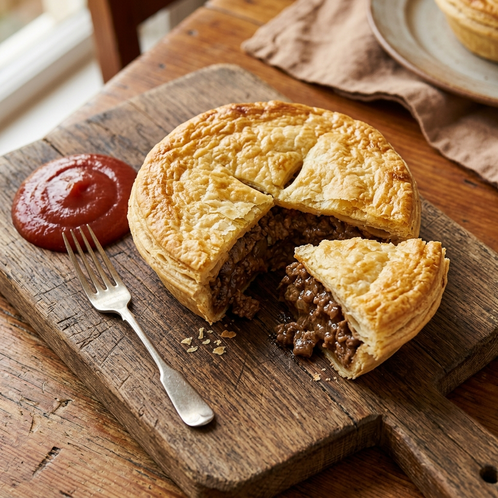

Aussie Meat Pie
Australia

Ingredients
- Ground Beef
- Onion (finely chopped)
- Beef Stock
- Worcestershire Sauce
- Cornstarch (for thickening)
- Shortcrust Pastry (base)
- Puff Pastry (lid)
- Egg wash
For Filling
For Pastry
Methods
- Brown the beef and onion in a pan. Add stock and sauces.
- Simmer and add cornstarch slurry until the gravy is thick. Let cool.
- Line pie tins with shortcrust pastry. Fill with the meat mixture.
- Top with a puff pastry lid, seal the edges, and brush with egg wash.
- Bake at 400°F (200°C) until golden brown. Serve with tomato sauce.